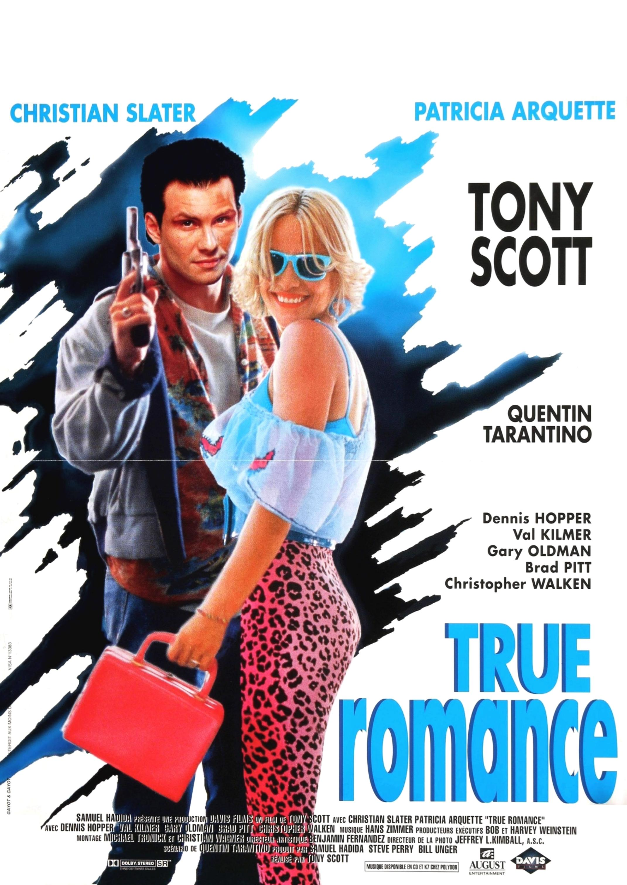

This website contains the entirety of my Music Analytics project: a detailed
analysis of film soundtracks. From this home page, you can read more about the
motivations for the project and general information regarding the three main data
types that were analysed over the course of the tasks.
Please also scroll through and explore the six pieces of film music that constituted the
main body of this project. In each page, you will find information about the piece
along with all the relevant examples of analyses that were carried out using various
types of software. There will aslo be links to download and view all relevant
material associated with the project including MuseScore files, encoded notation, images,
raw data and much more.
About this Project
|

|
You're So Cool
from True Romance (1993)
Hans Zimmer
|
|
|
Gassenhauer
from Badlands (1973)
Carl Orff
|
|
|
Dead Already
from American Beauty (1999)
Thomas Newman
|

|
Cantina Band
from Star Wars: Episode IV - A New Hope (1977)
John Williams
|

|
Comptine D’un Autre Été, L’après Midi
from Amélie (2001)
Yann Tiersen
|

|
The Artifact and Living
from Donnie Darko (2001)
Michael Andrews
|

Back to top?